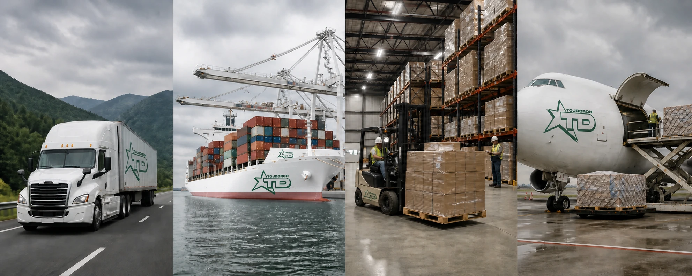

The right mode for every shipment.
TOJDORON organizes road, sea, cargo, and air freight as individual services or as one connected logistics plan.
Road freight
Flexible cargo movement across international road routes.
Road freight is a practical choice when a shipment needs adaptable routing, pickup and delivery coordination, or a direct connection between locations. We organize the journey around the load and destination.
- Full and partial load planning
- International route coordination
- Pickup-to-destination support
- Shipment-stage communication
Sea freight
Efficient maritime shipping for long-distance international cargo.
For cargo suited to ocean transport, TOJDORON helps select a practical maritime route and keeps the shipment connected to the next stage of delivery beyond the port.
- Maritime route selection
- Containerized cargo planning
- Port-stage coordination
- Onward delivery organization
Cargo shipping
A shipping option matched to the cargo—not the other way around.
We accept and deliver varied types of freight, comparing the available transport options to find a convenient and cost-conscious plan for the shipment.
- Route and mode comparison
- Varied cargo profiles
- Handling-aware planning
- Business and private shipments
Air freight
Fast transport for urgent and time-sensitive cargo.
When timing is the priority, air freight offers a direct way to move cargo quickly. TOJDORON organizes the air route and helps connect airport handling with the final destination.
- Urgent shipment planning
- International air routes
- Airport-stage coordination
- Final-destination support
One shipment can use more than one mode.
Some routes are strongest when road, sea, cargo handling, and air connections work together. TOJDORON looks at the full journey and organizes the handoffs as part of one plan.
Not sure which mode fits?
Send the cargo details. We’ll help identify the most practical transport approach.